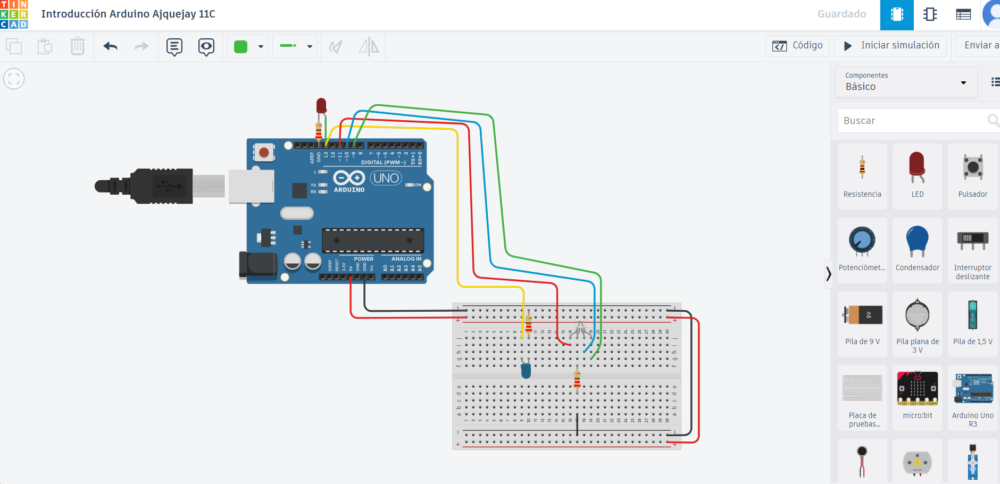

Contenido de la página web
Bitácora de Actividades
Semana 1: Introducción a Arduino
En esta semana realizamos una pequeña investigación sobre Arduino y sus componentes
¿No puedes ver el archivo? Haz clic aquí para descargarlo.
Semana 2: Creación del Index
En esta semana aprendimos a utilizar visual code e iniciamos la programación del encabezado.
Semana 3: Creación de página web
En esta semana seguimos utilizando visual code e iniciamos la programación de nuestra página web.
Semana 4: Personalizar página web
Personalizamos nuestra página web de mejor manera, agregando los colores que deseamos, tamaño y configuraciones necesarias.
Semana 5: Registro Fotográfico
Aquí puedes ver una captura de los avances realizados en el diseño de la interfaz:

Pie de foto: Circuito creado en clase
Semana 6: Avances en Video
En esta semana grabé un pequeño video mostrando el funcionamiento del circuito:
Pie de video: Demostración del proyecto en acción.